1. 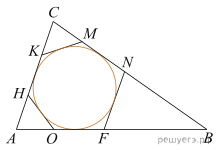К окружности, вписанной в треугольник ABC, проведены три касательные. Периметры отсеченных треугольников равны 6, 8, 10. Найдите периметр данного треугольника.

Ответ: 24
 PDF-версии: горизонтальная · вертикальная · крупный шрифт · с большим полем
PDF-версии: горизонтальная · вертикальная · крупный шрифт · с большим полем
1. 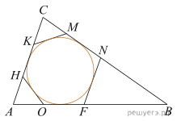К окружности, вписанной в треугольник ABC, проведены три касательные. Периметры отсеченных треугольников равны 6, 8, 10. Найдите периметр данного треугольника.
2. 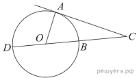
Найдите угол ACO, если его сторона CA касается окружности, O — центр окружности, сторона CO пересекает окружность в точках B и D, а дуга AD окружности, заключенная внутри этого угла, равна 116°. Ответ дайте в градусах.
3. 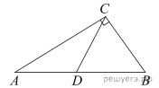
В треугольнике ABC угол ACB равен °, угол B равен °, CD — медиана. Найдите угол ACD. Ответ дайте в градусах.
4. 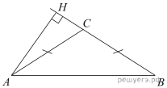 В тупоугольном треугольнике ABC высота AH равна 4. Найдите
5. 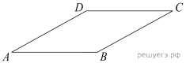
Найдите площадь ромба, если его диагонали равны 4 и 38.
6. 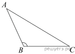
В треугольнике ABC угол B — тупой, AB = 5, BC = 6. Найдите величину угла, противолежащего стороне AC, если площадь треугольника равна 7,5. Ответ дайте в градусах.
7. 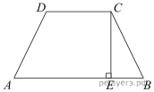
Большее основание равнобедренной трапеции равно 12. Боковая сторона равна 5. Синус острого угла равен 0,8. Найдите меньшее основание.
8. 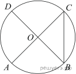
Отрезки AC и BD — диаметры окружности с центром O. Угол ACB равен 38°. Найдите угол AOD. Ответ дайте в градусах.
9. 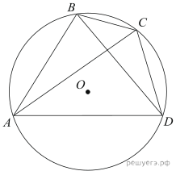Четырехугольник ABCD вписан в окружность. Угол ABC равен 120°, угол ABD равен 43°. Найдите угол CAD. Ответ дайте в градусах.
10. 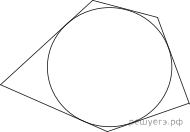
Около окружности, радиус которой равен 3, описан многоугольник, периметр которого равен 50. Найдите его площадь.
11. Основания равнобедренной трапеции равны 7 и 51. Тангенс острого угла равен Найдите высоту трапеции.
12. В ромбе ABCD угол ABC равен 122°. Найдите угол ACD. Ответ дайте в градусах.
13.
В треугольнике ABC угол C равен 3, CH — высота. Найдите
14. 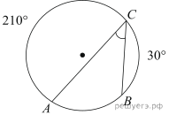
Дуга окружности AC, не содержащая точки B, составляет 210°. А дуга окружности BC, не содержащая точки A, составляет 30°. Найдите вписанный угол ACB. Ответ дайте в градусах.
15. 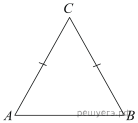 В треугольнике ABC угол C равен Найдите
16. 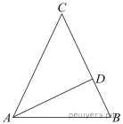В треугольнике ABC AD — биссектриса, угол C равен 50°, угол CAD равен 28°. Найдите угол B. Ответ дайте в градусах.
17. 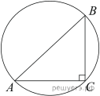
Гипотенуза прямоугольного треугольника равна 12. Найдите радиус описанной окружности этого треугольника.
18. В треугольнике ABC угол A равен Найдите угол C. Ответ дайте в градусах.
19.  Касательные CA и CB к окружности образуют угол ACB, равный 122°. Найдите величину меньшей дуги AB, стягиваемой точками касания. Ответ дайте в градусах.
Касательные CA и CB к окружности образуют угол ACB, равный 122°. Найдите величину меньшей дуги AB, стягиваемой точками касания. Ответ дайте в градусах.
20. 
В треугольнике ABC угол C равен 90°, ВС = 2. Найдите АС.
21. 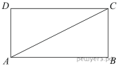
Диагональ прямоугольника вдвое больше одной из его сторон. Найдите больший из углов, который образует диагональ со сторонами прямоугольника? Ответ выразите в градусах.
22. 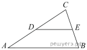
Площадь треугольника ABC равна 36, DE — средняя линия треугольника, параллельная стороне AB. Найдите площадь трапеции ABED.
23. 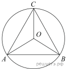
Сторона правильного треугольника равна Найдите радиус окружности, описанной около этого треугольника.
24. 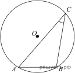Найдите хорду, на которую опирается угол 30°, вписанный в окружность радиуса 37.
25. 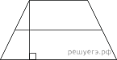
Высота трапеции равна 5, площадь равна 75. Найдите среднюю линию трапеции.
26. 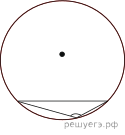
Чему равен тупой вписанный угол, опирающийся на хорду, равную радиусу окружности? Ответ дайте в градусах.
27. 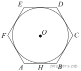 Найдите сторону правильного шестиугольника, описанного около окружности, радиус которой равен
28. 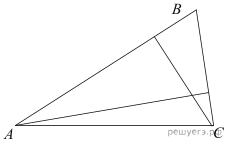
У треугольника со сторонами 56 и 8 проведены высоты к этим сторонам. Высота, проведенная к первой стороне, равна 7. Чему равна высота, проведенная ко второй стороне?
29. 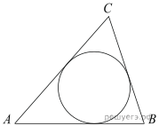
Периметр треугольника равен 12, а радиус вписанной окружности равен 1. Найдите площадь этого треугольника.
30. 
Найдите площадь прямоугольного треугольника, если его катет и гипотенуза равны соответственно 6 и 10.
31. 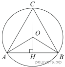
Высота правильного треугольника равна 3. Найдите радиус окружности, описанной около этого треугольника.
32. 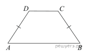
Чему равен больший угол равнобедренной трапеции, если известно, что разность противолежащих углов равна 50°? Ответ дайте в градусах.
33. 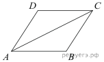
Найдите большую диагональ ромба, сторона которого равна а острый угол равен 60°.
34. 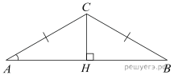
В треугольнике ABC AC = BC, AB = 30, Найдите AC.
35. 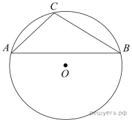Хорда AB делит окружность на две части, градусные величины которых относятся как Под каким углом видна эта хорда из точки C, принадлежащей меньшей дуге окружности? Ответ дайте в градусах.
36. Угол между двумя соседними сторонами правильного многоугольника, равен 156°. Найдите число вершин многоугольника.
37. 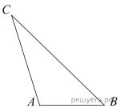
Найдите площадь треугольника, две стороны которого равны 40 и 20, а угол между ними равен 30°.
38. 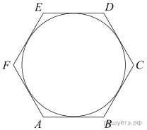Найдите радиус окружности, вписанной в правильный шестиугольник со стороной
39. В тупоугольном треугольнике ABC  высота AH равна 4. Найдите
высота AH равна 4. Найдите
40. 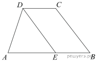Прямая, проведенная параллельно боковой стороне трапеции через конец меньшего основания, равного 19, отсекает треугольник, периметр которого равен 39. Найдите периметр трапеции.
41.
Один острый угол прямоугольного треугольника на 32° больше другого. Найдите больший острый угол. Ответ дайте в градусах.
42. Высота правильного треугольника равна 33. Найдите радиус окружности, описанной около этого треугольника.
43. 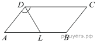
Биссектриса тупого угла параллелограмма делит противоположную сторону в отношении 4 : 3, считая от вершины острого угла. Найдите большую сторону параллелограмма, если его периметр равен 88.
44. 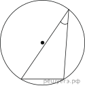
Чему равен острый вписанный угол, опирающийся на хорду, равную радиусу окружности? Ответ дайте в градусах.
45. 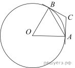 Через концы А и В дуги окружности с центром О проведены касательные АС и ВС. Угол СAB равен 17°. Найдите угол AОB. Ответ дайте в градусах.
46. Основания равнобедренной трапеции равны 43 и 7. Высота трапеции равна 27. Найдите тангенс острого угла трапеции.
47. В треугольнике ABC угол C равен 90°, CH – высота, Найдите
48. 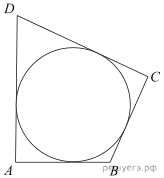 В четырехугольник ABCD вписана окружность, и Найдите четвертую сторону четырехугольника.
49.
В окружности с центром O отрезки AC и BD — диаметры. Центральный угол AOD равен 110°. Найдите вписанный угол ACB. Ответ дайте в градусах.
50.
Найдите площадь ромба, если его высота равна 2, а острый угол 30°.
51. Четырехугольник ABCD вписан в окружность. Угол ABD равен 75°, угол CAD равен 35°. Найдите угол ABC. Ответ дайте в градусах.
52. 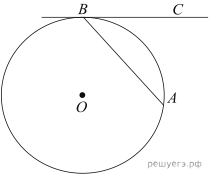Хорда AB стягивает дугу окружности в 92°. Найдите угол ABC между этой хордой и касательной к окружности, проведенной через точку B. Ответ дайте в градусах.
53. В треугольнике ABC AH – высота, Найдите
54. 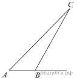В треугольнике ABC угол A равен внешний угол при вершине B равен Найдите угол C. Ответ дайте в градусах.
55.
В треугольнике ABC угол C равен 90°, CH — высота, Найдите BH.
56. Основания равнобедренной трапеции равны 28 и 15. Тангенс острого угла равен Найдите высоту трапеции.
57. 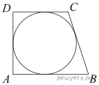
Периметр прямоугольной трапеции, описанной около окружности, равен 100, ее большая боковая сторона равна 42. Найдите радиус окружности.
58. 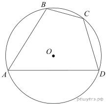Угол A четырехугольника ABCD, вписанного в окружность, равен 26°. Найдите угол C этого четырехугольника. Ответ дайте в градусах.
59. В тупоугольном треугольнике ABC высота AH равна 7, Найдите
60. 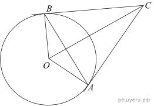
Касательные CA и CB к окружности образуют угол ACB, равный 34°. Найдите величину меньшей дуги AB, стягиваемой точками касания. Ответ дайте в градусах.
61. 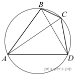
Угол ABD равен 53°. Угол ВСА равен 38°. Найдите вписанный угол BCD. Ответ дайте в градусах.
62. 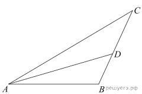
В треугольнике ABC AD — биссектриса, угол C равен 41°, угол BAD равен 69°. Найдите угол ADB. Ответ дайте в градусах.
63. В ромбе ABCD угол CAD равен 34°. Найдите угол ABC. Ответ дайте в градусах.
64. Основания равнобедренной трапеции равны 27 и 33. Косинус острого угла трапеции равен Найдите боковую сторону.
65. Одна сторона треугольника равна  радиус описанной окружности равен 1. Найдите острый угол треугольника, противолежащий этой стороне. Ответ дайте в градусах.
радиус описанной окружности равен 1. Найдите острый угол треугольника, противолежащий этой стороне. Ответ дайте в градусах.
66. В треугольнике ABC угол C равен 90°, Найдите
67.
В треугольнике ABC AC = BC = 5, Найдите АВ.
68. Сторона правильного треугольника равна Найдите радиус окружности, вписанной в этот треугольник.
69. Один угол параллелограмма больше другого на Найдите больший угол. Ответ дайте в градусах.
70. В треугольнике ABC угол A равен 43 градусам, углы B и C - острые, высоты BD и CE пересекаются в точке Найдите угол  Ответ дайте в градусах.
Ответ дайте в градусах.
71.
Угол ACB равен 42°. Градусная величина дуги AB окружности, не содержащей точек D и E, равна 124°. Найдите угол DAE. Ответ дайте в градусах.
72.
Угол ACO равен 35°, где O — центр окружности. Его сторона CA касается окружности. Найдите величину меньшей дуги AB окружности, заключенной внутри этого угла. Ответ дайте в градусах.
73.
В треугольнике ABC угол C равен 90°, Найдите
74. Углы треугольника относятся как 2 : 3 : 4. Найдите меньший из них. Ответ дайте в градусах.
75. Меньшее основание равнобедренной трапеции равно 23. Высота трапеции равна 39. Тангенс острого угла равен Найдите большее основание.
76. Найдите вписанный угол ABC, опирающийся на дугу AC, длина которой равна длины окружности. Ответ дайте в градусах.
77. В треугольнике ABC AC = BC, AB = 4, высота CH равна Найдите угол Ответ дайте в градусах.
78. Площадь параллелограмма ABCD равна 189. Точка E — середина стороны AD. Найдите площадь трапеции AECB.
79.
Угол между стороной правильного n-угольника, вписанного в окружность, и радиусом этой окружности, проведенным в одну из вершин стороны, равен Найдите n.
80.
Боковые стороны трапеции, описанной около окружности, равны 27 и 4. Найдите среднюю линию трапеции.
81. Найдите хорду, на которую опирается угол 120°, вписанный в окружность радиуса
82.
В треугольнике ABC угол C равен Найдите
83. Угол при вершине, противолежащей основанию равнобедренного треугольника, равен 150°. Боковая сторона треугольника равна 26. Найдите площадь этого треугольника.
84. Меньшее основание равнобедренной трапеции равно 6. Высота трапеции равна 10. Тангенс острого угла равен 2. Найдите большее основание.
85. Стороны четырехугольника ABCD AB, BC, CD и AD стягивают дуги описанной окружности, градусные величины которых равны соответственно 76°, 101°, 106°, 77°. Найдите угол B этого четырехугольника. Ответ дайте в градусах.
86.
В остроугольном треугольнике ABC угол A равен °. BD и CE — высоты, пересекающиеся в точке O. Найдите угол DOE. Ответ дайте в градусах.
87. Периметр прямоугольника равен 54, а диагональ равна 26. Найдите площадь этого прямоугольника.
88.
В четырёхугольник ABCD вписана окружность, Найдите периметр четырёхугольника ABCD.
89. Хорда AB стягивает дугу окружности в 70°. Найдите угол ABC между этой хордой и касательной к окружности, проведенной через точку B. Ответ дайте в градусах.
90.
Найдите угол ACB, если вписанные углы ADB и DAE опираются на дуги окружности, градусные величины которых равны соответственно и Ответ дайте в градусах.
91.
Острый угол B прямоугольного треугольника ABC равен 55°. Найдите угол между высотой CH и медианой CM, проведёнными из вершины прямого угла C. Ответ дайте в градусах.
92. Угол при вершине, противолежащей основанию равнобедренного треугольника, равен 30°. Боковая сторона треугольника равна 45. Найдите площадь этого треугольника.
93. 
Периметр правильного шестиугольника равен 222. Найдите диаметр описанной окружности.
94. Периметр прямоугольника равен 42, а площадь 108. Найдите большую сторону прямоугольника.
95.  В равнобедренной трапеции диагонали перпендикулярны. Высота трапеции равна 12. Найдите ее среднюю линию.
В равнобедренной трапеции диагонали перпендикулярны. Высота трапеции равна 12. Найдите ее среднюю линию.
96.
В треугольнике ABC AD — высота, угол BAD равен Найдите угол C. Ответ дайте в градусах.
97.
Четырёхугольник ABCD вписан в окружность. Угол ABD равен 61°, угол CAD равен 37° Найдите угол ABC. Ответ дайте в градусах.
98. Найдите радиус окружности, вписанной в правильный треугольник, высота которого равна 138.
99.
Через концы A, B дуги окружности в проведены касательные AC и BC. Найдите угол ACB. Ответ дайте в градусах.
100.
В треугольнике ABC угол C равен 90°, AC = 7, Найдите радиус описанной окружности этого треугольника.
101. .svg)
В прямоугольном треугольнике угол между высотой и медианой, проведёнными из вершины прямого угла, равен 38°. Найдите больший из острых углов этого треугольника. Ответ дайте в градусах.
102.
Площадь треугольника ABC равна 176, DE — средняя линия. Найдите площадь треугольника CDE.
103. Периметр прямоугольника равен 34, а площадь равна 60. Найдите диагональ этого прямоугольника.
104.
В треугольнике ABC угол C равен Найдите высоту
105. Основания равнобедренной трапеции равны 7 и 13, а ее площадь равна 40. Найдите периметр трапеции.
106.
Угол ACB равен Градусная величина дуги AB окружности, не содержащей точек D и E, равна  Найдите угол DAE. Ответ дайте в градусах.
Найдите угол DAE. Ответ дайте в градусах.
107. В треугольнике ABC известно, что угол C равен Найдите радиус вписанной окружности.
108. Точки A, B, C, расположенные на окружности, делят ее на три дуги, градусные величины которых относятся как 1 : 8 : 9. Найдите больший угол треугольника ABC. Ответ дайте в градусах.
109.
Угол между биссектрисой и медианой прямоугольного треугольника, проведенными из вершины прямого угла, равен 14°. Найдите меньший угол этого треугольника. Ответ дайте в градусах.
110. В тупоугольном треугольнике ABC высота AH равна 20. Найдите
111.
Диагонали ромба относятся как 1 : 9. Периметр ромба равен 164. Найдите высоту ромба.
112.
Через концы А и В дуги окружности с центром О проведены касательные АС и ВС. Угол СAB равен 35°. Найдите угол AОB. Ответ дайте в градусах.
113. Радиус окружности, вписанной в правильный треугольник, равен Найдите сторону этого треугольника.
114.
Перпендикуляр, опущенный из вершины тупого угла на большее основание равнобедренной трапеции, делит его на части, имеющие длины 10 и 4. Найдите среднюю линию этой трапеции.
115. В треугольнике ABC угол B равен 45°, угол C равен 85°, AD — биссектриса, E — такая точка на AB, что AE = AC. Найдите угол BDE. Ответ дайте в градусах.
116. Найдите угол ACO, если его сторона CA касается окружности, O — центр окружности, сторона CO пересекает окружность в точке B, дуга АВ окружности, заключённая внутри этого угла равна 64°. Ответ дайте в градусах.
117.
Дуга окружности AC, не содержащая точки B, составляет 200°. А дуга окружности BC, не содержащая точки A, составляет 80°. Найдите вписанный угол ACB. Ответ дайте в градусах.
118.
В треугольнике ABC угол C равен 90°, высота CH равна 8, BC = 16. Найдите
119. В равнобедренном треугольнике ABC с основанием AB боковая сторона равна Найдите длину высоты AH.
120. Сторона правильного треугольника равна Найдите радиус окружности, вписанной в этот треугольник.
121. Стороны параллелограмма равны 9 и 15. Высота, опущенная на первую сторону, равна 10. Найдите высоту, опущенную на вторую сторону параллелограмма.
122.
Основания равнобедренной трапеции равны 15 и 9, один из углов равен Найдите высоту трапеции.
123. Чему равна сторона правильного шестиугольника, вписанного в окружность, радиус которой равен 6?
124. Углы треугольника относятся как 1 : 1 : 10. Найдите меньший из них. Ответ дайте в градусах.
125.
В треугольнике ABC сторона AB равна угол С равен 120°. Найдите радиус описанной около этого треугольника окружности.
126. Найдите хорду, на которую опирается угол 30°, вписанный в окружность радиуса 28.
127. В ромбе ABCD угол DBA равен 13°. Найдите угол BCD. Ответ дайте в градусах.
128.
В треугольнике ABC угол C равен 90°, Найдите высоту CH.
129. .svg)
Угол C треугольника ABC, вписанного в окружность радиуса 36, равен 30°. Найдите сторону AB этого треугольника.
130.
В треугольнике ABC AC = BC, AB = 32, Найдите AC.
131.
Основания равнобедренной трапеции равны 4 и 16. Синус острого угла трапеции равен 0,6. Найдите боковую сторону.
132.  В треугольнике ABC угол A равен угол B равен AD, BE и CF — биссектрисы, пересекающиеся в точке O. Найдите угол AOF. Ответ дайте в градусах.
В треугольнике ABC угол A равен угол B равен AD, BE и CF — биссектрисы, пересекающиеся в точке O. Найдите угол AOF. Ответ дайте в градусах.
133. Около окружности описана трапеция, периметр которой равен 84. Найдите длину её средней линии.
134. Треугольник ABC вписан в окружность с центром O. Найдите угол BOC, если угол BAC равен 32°.
135. Точка пересечения биссектрис двух углов параллелограмма, прилежащих к одной стороне, принадлежит противоположной стороне. Меньшая сторона параллелограмма равна 5. Найдите его большую сторону.
136.
Угол ACO равен 24°. Его сторона CA касается окружности. Найдите градусную величину дуги AD окружности, заключенной внутри этого угла. Ответ дайте в градусах.
137. Около трапеции описана окружность. Периметр трапеции равен 52, средняя линия равна 21. Найдите боковую сторону трапеции.
138.
В треугольнике ABC AC = BC = 5, Найдите АВ.
139.
Найдите угол ACO, если его сторона CA касается окружности, O — центр окружности, а меньшая дуга окружности AB, заключенная внутри этого угла, равна 37°. Ответ дайте в градусах.
140. В равнобедренной трапеции диагонали перпендикулярны. Высота трапеции равна 48. Найдите ее среднюю линию.
141.  В треугольнике ABC угол A равен 60°, угол B равен 82°. AD, BE и CF — высоты, пересекающиеся в точке O. Найдите угол AOF. Ответ дайте в градусах.
В треугольнике ABC угол A равен 60°, угол B равен 82°. AD, BE и CF — высоты, пересекающиеся в точке O. Найдите угол AOF. Ответ дайте в градусах.
142. Найдите сторону правильного шестиугольника, описанного около окружности, радиус которой равен
143.
В треугольнике ABC угол C равен 90°, CH — высота, Найдите AH.
144. В треугольнике ABC AH – высота, Найдите
145.
Отрезки AC и BD — диаметры окружности с центром O. Угол AOD равен 66°. Найдите вписанный угол ACB. Ответ дайте в градусах.
146. Площадь параллелограмма ABCD равна 153. Найдите площадь параллелограмма A'B'C'D', вершинами которого являются середины сторон данного параллелограмма.
147.
Перпендикуляр, опущенный из вершины тупого угла на большее основание равнобедренной трапеции, делит его на части, имеющие длины 74 и 41. Найдите среднюю линию этой трапеции.
148.
В треугольнике ABC угол C равен 90°, BC = 4, Найдите АВ.
149.
Боковая сторона равнобедренной трапеции равна ее меньшему основанию, угол при основании равен большее основание равно 38. Найдите радиус описанной окружности этой трапеции.
150. В треугольнике ABC угол B равен угол C равен AD — биссектриса, E — такая точка на AB, что Найдите угол BDE. Ответ дайте в градусах.
![AC= дробь: числитель: BC, знаменатель: тангенс A конец дроби = дробь: числитель: BC косинус A, знаменатель: синус A конец дроби = дробь: числитель: BC косинус A, знаменатель: корень из 1 минус косинус в степени 2 конец дроби A = дробь: числитель: 2 умножить на дробь: числитель: корень из 17, знаменатель: , конец дроби знаменатель: 17 конец дроби корень из 1 минус дробь: числитель: 1, знаменатель: 17 конец дроби =2 умножить на дробь: числитель: корень из 17, знаменатель: 17 конец дроби умножить на дробь: числитель: корень из 17, знаменатель: 4 конец дроби =0,5.](./test_3_files/17463a6c7ca196b91255817f426546bc.svg)


 a + 2
a + 2 

 Следовательно,
Следовательно,  В четырёхугольнике AOBC углы A и B — прямые, тогда
В четырёхугольнике AOBC углы A и B — прямые, тогда и Решим систему:
и Решим систему:


 Тогда
Тогда